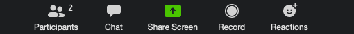
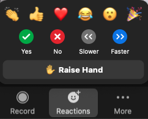
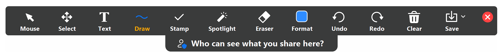

Introduction to R and RStudio
UBC Library Research Commons
http://ubc-library-rc.github.io/data-analysis-r/
https://libcal.library.ubc.ca/appointments/research_commons/
The Vancouver Campus is located on the traditional, ancestral, and unceded territory of the xʷməθkʷəy̓əm (Musqueam) people.
Map: https://native-land.ca/
Participating online - Reactions



Participating online - Annotate

Learning objectives
- Become familiar with R and R studio environment
- Learn some basic R concepts and functions
- Learn to explore and manipulate data in R
Outline
| 0:05 | The R Studio environment |
| 0:15 | Packages and concepts |
| 0:40 | Importing and exporting |
| 0:55 | Break |
| 1:00 | Introducing the dataset |
| 1:25 | Data manipulation |
| 1:40 | Piping |
| 1:50 | Joining data frames |
Pre workshop setup
- Install R
- Install R Studio
R is a programming language developed by statisticians for data analysis.
Open R
- free and open source
- interactive data analysis - R Console
- script - R Editor
R Studio makes it easier to work with R
Open RStudio
- text editor
- command history
- environment details
- file browser
- ...
R Markdown
Download and Open R Markdown file
- code chunks
- narratives
- results
- outputs
Operators
Assignment
- <-
Mathematical
- +
- -
- *
- /
Relational
- ==
- !=
- >
- >=
- <
- <=
Logical
- &
- |
- !